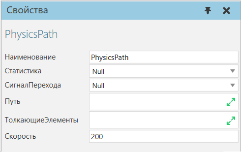

Пути в физическом мире |
|
Движение и поток компонентов с физическими свойствами можно реализовать с помощью поведения Physics Path. Это позволяет применять контактные силы к компонентам, движущимся по траекториям. Например, вы можете выталкивать, отклонять, делить, сбрасывать и накапливать компоненты в одной или нескольких дорожках. Есть некоторые ограничения: ·Физический путь не может принимать компоненты, не имеющие поведения физического объекта. ·Физический путь должен быть связан с поведением физического объекта Physics Entity, у которого свойство Физический тип установлено на #Кинематический ·Для компонента с поведением объекта Physics Entity, входящего в Physics Path, для свойства Физический тип должно быть установлено значение #В физике Любой элемент, который потенциально может войти в контакт с компонентом на физическом пути, должен иметь определенное свойство ГеометрияСтолкновения. В противном случае компонент либо провалится по траектории, либо пройдет сквозь твердые объекты. В некоторых случаях вы можете установить для свойства ГеометрияСтолкновения корневого объекта, принадлежащего тому же узлу, что и Путь физики, значение #Boxes. В целом, #Box работает, но охватывает слишком много пространства, смещает компоненты и, возможно, делает неэффективным любой толкающий элемент. Кроме того, #Precise будет работать, но отскок компонентов и отклонение возвышений и впадин в геометрии узла может привести к нереалистичным результатам. Важно: Если свойство ГеометрияСтолкновения корневого элемента определено, этот режим будет унаследован его подэлементами. В других случаях вы можете установить свойство ГеометрияСтолкновения для каждого объекта, который формирует плоскость и/или объемную форму физического пути и его толкающих объектов. В целом, #Box режим предоставит адаптируемое решение, поскольку вы можете определить размер его границы. Отступы помогают при переходе компонентов к краям пути и от них, а также между другими объектами, которые должны обладать некоторой упругостью. Если вы хотите использовать режим #Precise, будьте осторожны с зазорами, отверстиями и угловыми допусками граней в геометрии компонента. 1.В трехмерном мире выберите компонент. 2.На вкладке Моделирование в панели Диаграмма компонента, Дерево узлов компонента, выберите узел, в который вы хотите включить Physics Path. 3.На вкладке Моделирование в группе Поведение, щелкните стрелку Поведение, а потом под Физика, нажмите Траектория. 4.На панели Свойства, выполните одно или несколько из следующих действий: ·Чтобы определить путевые точки траектории, нажмите кнопку (развернуть) Путь, а затем щелкните значок ПЛЮС. Далее, в панели Добавить элементы «Путь» , найдите и выберите каждый элемент рамки, на который вы хотите ссылаться как на путевую точку на траектории, а затем нажмите Закрыть. При необходимости используйте стрелки в свойстве Путь, чтобы изменить порядок добавленных элементов рамки. ·Чтобы определить толкающие объекты пути, нажмите кнопку (развернуть) ТолкающиеЭлементы, а затем щелкните значок ПЛЮС. Далее, в Добавьте элементы «ТолкающиеЭлементы», найдите и выберите каждый элемент, который может потенциально конфликтовать с компонентами на пути, а затем щелкните Закрыть. Примечание: Установка отрицательного значения свойства Скорость приведет к тому, что направление пути будет противоположным. 
|